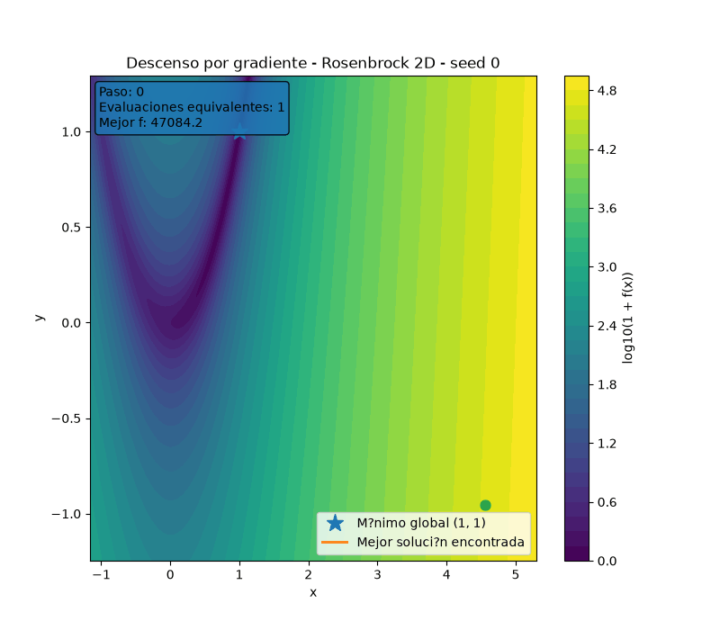
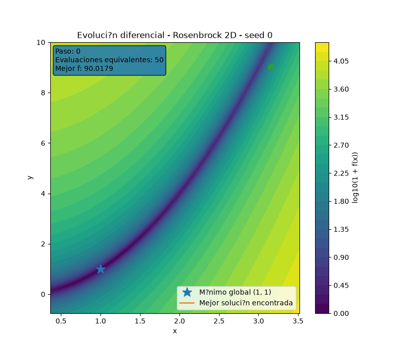
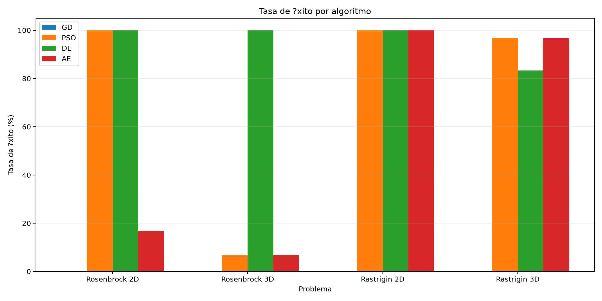
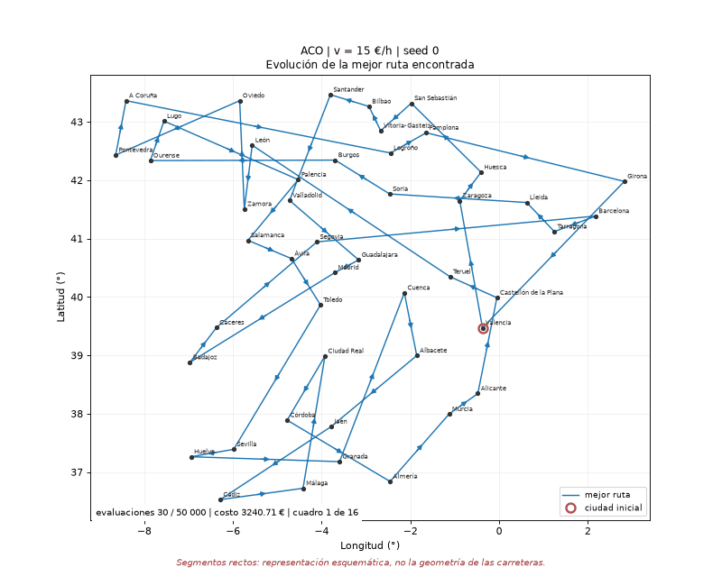
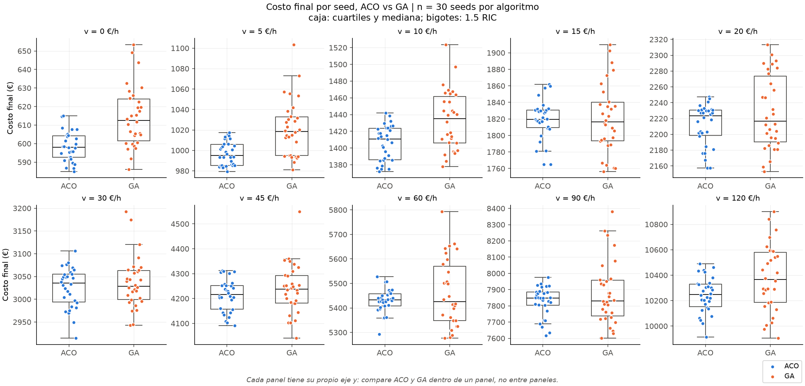
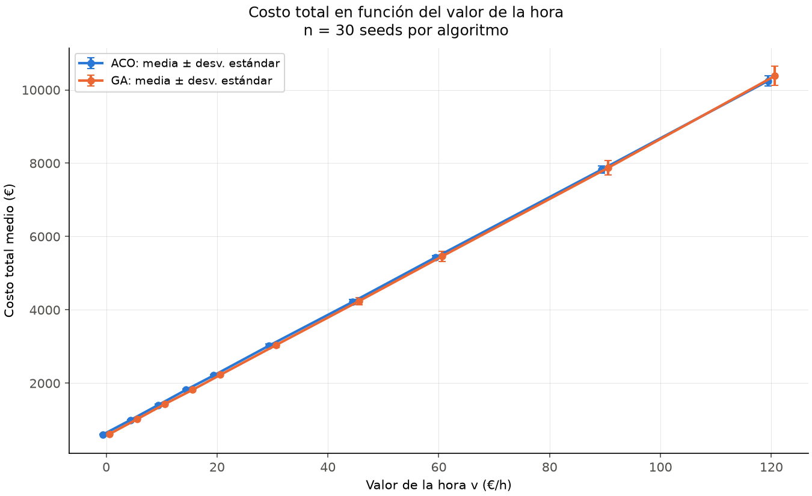
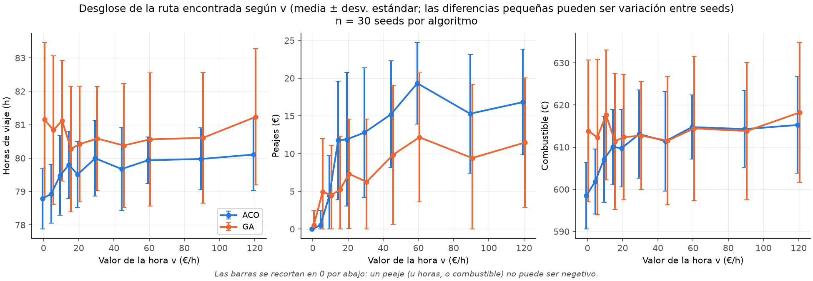

De Valles Traicioneros a las Carreteras de España: Optimización Numérica y Combinatoria con Algoritmos Bioinspirados
Un estudio experimental exhaustivo sobre el colapso de Descenso de Gradiente en paisajes complejos, el desempeño de Evolución Diferencial y la búsqueda heurística de rutas para el Problema del Viajero en 47 capitales peninsulares con matrices viales de OSRM.
En este trabajo investigamos dos problemas fundamentales de la computación contemporánea: la optimización en espacios continuos multimodales y mal condicionados, y la optimización combinatoria en grafos viales reales. En nuestros experimentos (30 semillas por configuración), el Descenso de Gradiente obtuvo 0% de éxito tanto ante la curvatura mal condicionada de Rosenbrock ($\kappa \approx 2508$) como ante los $11^n$ mínimos locales de Rastrigin. Evolución Diferencial (DE) alcanzó el 100% de éxito en Rosenbrock 2D y 3D y en Rastrigin 2D, y el 83.3% en Rastrigin 3D. Finalmente, modelamos el recorrido de 47 capitales peninsulares de España con matrices asimétricas de OpenStreetMap (OSRM) y costos operativos de un SEAT Ibiza 1.0 TSI. Entre las rutas encontradas por ACO y GA no se observó un umbral de cruce en función del valor de la hora: la mejor ruta encontrada tiene a la vez el menor tiempo y el menor costo fijo. Esta conclusión está condicionada a una matriz de peajes provisional (Sección 2.3).
1. Optimización Numérica: El Desafío del Presupuesto y la Geometría del Terreno
Uno de los mayores errores metodológicos en la literatura de computación evolutiva es comparar algoritmos basándose únicamente en el número de "iteraciones" o "generaciones". Un algoritmo que hace una sola llamada a la función objetivo por paso no puede contrastarse justamente contra un método que muestrea decenas de puntos para aproximar un gradiente local.
1.1 Funciones de Prueba: Definición, Dominio, Mínimo Global y Gradiente
Sometimos a prueba cuatro optimizadores sobre dos geometrías diametralmente opuestas, en dimensión $n = 2$ y $n = 3$. Los dominios experimentales son los habituales para estas funciones (Surjanovic y Bingham, 2013).
Función de Rosenbrock (Rosenbrock, 1960). Definida en $[-5, 10]^n$ como
$$f(\mathbf{x}) = \sum_{i=1}^{n-1} \left[ 100\,(x_{i+1} - x_i^2)^2 + (1 - x_i)^2 \right] \tag{1}$$con mínimo global en $\mathbf{x}^* = (1, \dots, 1)$, donde $f^* = 0$. Su gradiente analítico, el que usa nuestro código, es
$$\frac{\partial f}{\partial x_1} = -400\,x_1 (x_2 - x_1^2) + 2(x_1 - 1), \qquad \frac{\partial f}{\partial x_n} = 200\,(x_n - x_{n-1}^2) \tag{2}$$ $$\frac{\partial f}{\partial x_i} = 200\,(x_i - x_{i-1}^2) - 400\,x_i (x_{i+1} - x_i^2) + 2(x_i - 1), \quad 2 \le i \le n-1 \tag{3}$$Presenta un valle parabólico extremadamente estrecho. En $(1, 1)$ el Hessiano es $\nabla^2 f = \begin{pmatrix} 802 & -400 \\ -400 & 200 \end{pmatrix}$, con autovalores $\lambda_{\max} \approx 1001.6$ y $\lambda_{\min} \approx 0.399$, lo que da un número de condición $\kappa \approx 2508 \gg 1$: la curvatura transversal al valle es unas 2500 veces mayor que la curvatura a lo largo de su fondo.
Función de Rastrigin (Rastrigin, 1974). Definida en $[-5.12, 5.12]^n$ como
$$f(\mathbf{x}) = 10\,n + \sum_{i=1}^{n} \left[ x_i^2 - 10\cos(2\pi x_i) \right], \qquad \frac{\partial f}{\partial x_i} = 2\,x_i + 20\pi \sin(2\pi x_i) \tag{4}$$con mínimo global en $\mathbf{x}^* = (0, \dots, 0)$, donde $f^* = 0$. Es separable y tiene 11 mínimos locales por eje dentro del dominio (cerca de cada entero $k \in \{-5, \dots, 5\}$), es decir, $11^n$ mínimos locales ($121$ en 2D y $1331$ en 3D). La segunda derivada máxima, $2 + 40\pi^2 \approx 396.78$, es la cota de Lipschitz del gradiente $L$, de modo que un paso fijo necesita $\alpha < 2/L \approx 0.00504$ para no divergir.
1.2 Algoritmos y Ecuaciones de Actualización
Los cuatro optimizadores comparten el mismo dominio $[\mathbf{l}, \mathbf{u}]$, la misma política de límites (recorte, $\operatorname{clip}(x_i, l_i, u_i) = \min(\max(x_i, l_i), u_i)$) y el mismo contador de evaluaciones. Los valores de los parámetros son los de config/part1.yaml.
Descenso por gradiente (GD). Parte de $\mathbf{x}_0 \sim \mathcal{U}(\mathbf{l}, \mathbf{u})$, generado con la semilla de la corrida, y actualiza
$$\mathbf{x}_{t+1} = \operatorname{clip}\left(\mathbf{x}_t - \alpha\,\nabla f(\mathbf{x}_t),\ \mathbf{l},\ \mathbf{u}\right), \qquad \alpha = 0.0002 \tag{5}$$Se detiene cuando $\lVert \nabla f(\mathbf{x}_t) \rVert \le 10^{-8}$ o cuando la siguiente iteración completa no cabe en el presupuesto.
Algoritmo evolutivo (AE) con representación real (Eiben y Smith, 2015). Población de $N = 50$ individuos. Cada padre se elige por torneo de tamaño $k = 3$ (gana el de menor $f$). Con probabilidad $p_c = 0.9$, cada pareja de padres $\mathbf{a}, \mathbf{b}$ produce dos hijos por cruce BLX-$\alpha$:
$$c_j \sim \mathcal{U}\big(\min(a_j, b_j) - \alpha d_j,\ \max(a_j, b_j) + \alpha d_j\big), \qquad d_j = |a_j - b_j|, \quad \alpha = 0.5 \tag{6}$$Después, cada gen muta con probabilidad $p_m = 0.1$ por ruido gaussiano, $c_j \leftarrow c_j + \sigma_j z$ con $z \sim \mathcal{N}(0, 1)$ y $\sigma_j = 0.1\,(u_j - l_j)$, y se aplica el recorte. Reemplazo generacional con elitismo: los 2 mejores pasan sin reevaluarse y se generan $N - 2 = 48$ hijos por generación.
Optimización por enjambre de partículas (PSO) (Eberhart y Kennedy, 1995). Con $N = 50$ partículas, mejor posición personal $\mathbf{p}_i$ y mejor posición global $\mathbf{g}$:
$$\mathbf{v}_i \leftarrow w\,\mathbf{v}_i + c_1 \mathbf{r}_1 \odot (\mathbf{p}_i - \mathbf{x}_i) + c_2 \mathbf{r}_2 \odot (\mathbf{g} - \mathbf{x}_i), \qquad \mathbf{r}_1, \mathbf{r}_2 \sim \mathcal{U}(0, 1)^n \tag{7}$$ $$\mathbf{v}_i \leftarrow \operatorname{clip}(\mathbf{v}_i, -\mathbf{v}_{\max}, \mathbf{v}_{\max}), \qquad \mathbf{x}_i \leftarrow \operatorname{clip}(\mathbf{x}_i + \mathbf{v}_i,\ \mathbf{l},\ \mathbf{u}) \tag{8}$$con $w = 0.7$, $c_1 = c_2 = 1.5$ y $\mathbf{v}_{\max} = 0.5\,(\mathbf{u} - \mathbf{l})$. Las velocidades iniciales son uniformes en $[-\mathbf{v}_{\max}/2, \mathbf{v}_{\max}/2]$. $\mathbf{p}_i$ y $\mathbf{g}$ solo cambian si hay una mejora estricta.
Evolución diferencial (DE), variante DE/rand/1/bin (Storn y Price, 1997), con $NP = 50$, $F = 0.8$ y $CR = 0.9$. Para cada individuo $\mathbf{x}_i$ se eligen tres índices distintos entre sí y de $i$:
$$\mathbf{v}_i = \operatorname{clip}\big(\mathbf{x}_{r_1} + F\,(\mathbf{x}_{r_2} - \mathbf{x}_{r_3}),\ \mathbf{l},\ \mathbf{u}\big) \tag{9}$$ $$u_{ij} = \begin{cases} v_{ij} & \text{si } \text{rand}_j < CR \text{ o } j = j_{\text{rand}} \\ x_{ij} & \text{en otro caso} \end{cases}, \qquad \mathbf{x}_i \leftarrow \begin{cases} \mathbf{u}_i & \text{si } f(\mathbf{u}_i) \le f(\mathbf{x}_i) \\ \mathbf{x}_i & \text{en otro caso} \end{cases} \tag{10}$$La actualización es síncrona: los vectores de prueba de una generación se construyen con la población anterior.
1.3 El Modelo de Costo Computacional Equitativo ($E_{eq} = N_f + 2n\,N_{grad}$)
Nuestra implementación del Descenso de Gradiente (GD) usa el gradiente analítico $\nabla f(\mathbf{x})$ de cada función (ecuaciones 2 a 4). Para compararlo con métodos que solo evalúan $f$, cada evaluación del gradiente se cobra, por convención, como $2n$ evaluaciones de $f$: es lo que costaría aproximarlo por diferencias finitas centrales,
$$\frac{\partial f}{\partial x_i} \approx \frac{f(\mathbf{x} + h\mathbf{e}_i) - f(\mathbf{x} - h\mathbf{e}_i)}{2h} \tag{11}$$Por lo tanto, la métrica unificada de Evaluaciones Equivalentes ($E_{eq}$) es: $$E_{eq} = N_f + 2n \cdot N_{grad} \tag{12}$$ Donde 1 paso de GD en 2D cuesta 5 evaluaciones ($2(2)+1$), y en 3D cuesta 7 evaluaciones ($2(3)+1$). Los algoritmos bioinspirados (AE, PSO, DE) consumen estrictamente 1 evaluación por individuo.
Fijamos un presupuesto innegociable de $10\,000$ evaluaciones equivalentes y un umbral de convergencia riguroso de $|f(\mathbf{x}) - f^*| \le 10^{-4}$. En nuestro código fuente, el paso de GD valida preventivamente el saldo restante antes de invocar el cálculo de gradientes, asegurando que se detenga de forma equitativa.
1.4 Resultados Experimentales en 30 Semillas
A continuación se resume el comportamiento empírico tras 480 ejecuciones independientes (30 semillas por combinación de función, dimensión y algoritmo), tal como se reporta en la Tabla 1. La Tabla 2 reporta por separado las evaluaciones de $f$ y de $\nabla f$ que consumió cada configuración.
Tabla 1
Desempeño de los cuatro optimizadores en Rosenbrock y Rastrigin (30 corridas por configuración)
| Función | Dim | Algoritmo | Mejor $f$ | Peor $f$ | Media $\pm$ Desv. | Tasa de Éxito |
|---|---|---|---|---|---|---|
| Rosenbrock | 2D | Gradient Descent | $2.79 \times 10^{-2}$ | $14.85$ | $3.54 \pm 4.17$ | 0.0% (0/30) |
| Rosenbrock | 2D | Algoritmo Evolutivo (BLX-$\alpha$) | $4.16 \times 10^{-6}$ | $0.30$ | $4.19 \times 10^{-2} \pm 7.35 \times 10^{-2}$ | 16.7% (5/30) |
| Rosenbrock | 2D | PSO ($w=0.7, c_1=c_2=1.5$) | $5.63 \times 10^{-15}$ | $1.60 \times 10^{-8}$ | $9.61 \times 10^{-10} \pm 3.04 \times 10^{-9}$ | 100.0% (30/30) |
| Rosenbrock | 2D | Evolución Diferencial (DE) | $8.21 \times 10^{-29}$ | $2.25 \times 10^{-22}$ | $1.05 \times 10^{-23} \pm 4.13 \times 10^{-23}$ | 100.0% (30/30) |
| Rosenbrock | 3D | Gradient Descent | $0.10$ | $9.46$ | $2.96 \pm 2.90$ | 0.0% (0/30) |
| Rosenbrock | 3D | Algoritmo Evolutivo (BLX-$\alpha$) | $1.61 \times 10^{-6}$ | $2.67$ | $0.64 \pm 0.63$ | 6.7% (2/30) |
| Rosenbrock | 3D | PSO ($w=0.7, c_1=c_2=1.5$) | $6.88 \times 10^{-5}$ | $5.66$ | $0.39 \pm 1.26$ | 6.7% (2/30) |
| Rosenbrock | 3D | Evolución Diferencial (DE) | $1.51 \times 10^{-13}$ | $9.65 \times 10^{-10}$ | $7.68 \times 10^{-11} \pm 2.00 \times 10^{-10}$ | 100.0% (30/30) |
| Rastrigin | 2D | Gradient Descent | $1.99$ | $33.83$ | $16.78 \pm 10.64$ | 0.0% (0/30) |
| Rastrigin | 2D | Algoritmo Evolutivo (BLX-$\alpha$) | $0$ | $1.66 \times 10^{-8}$ | $5.53 \times 10^{-10} \pm 3.03 \times 10^{-9}$ | 100.0% (30/30) |
| Rastrigin | 2D | PSO ($w=0.7, c_1=c_2=1.5$) | $0$ | $0$ | $0 \pm 0$ | 100.0% (30/30) |
| Rastrigin | 2D | Evolución Diferencial (DE) | $0$ | $0$ | $0 \pm 0$ | 100.0% (30/30) |
| Rastrigin | 3D | Gradient Descent | $4.97$ | $49.75$ | $25.50 \pm 11.90$ | 0.0% (0/30) |
| Rastrigin | 3D | Algoritmo Evolutivo (BLX-$\alpha$) | $0$ | $3.61 \times 10^{-4}$ | $1.57 \times 10^{-5} \pm 6.76 \times 10^{-5}$ | 96.7% (29/30) |
| Rastrigin | 3D | PSO ($w=0.7, c_1=c_2=1.5$) | $0$ | $0.99$ | $3.32 \times 10^{-2} \pm 0.18$ | 96.7% (29/30) |
| Rastrigin | 3D | Evolución Diferencial (DE) | $3.56 \times 10^{-10}$ | $1.34 \times 10^{-2}$ | $6.35 \times 10^{-4} \pm 2.47 \times 10^{-3}$ | 83.3% (25/30) |
Nota. Presupuesto de 10.000 evaluaciones equivalentes por corrida, semillas 0–29. Éxito: $|f_{best} - f^*| \le 10^{-4}$. Redondeo: dos decimales; valores menores que 0.1 en notación científica con tres cifras significativas. Datos de parte1/results/summary/parte1_comparacion.csv (repositorio RNA_20262_OptNumerica).
Tabla 2
Evaluaciones de $f$ y de $\nabla f$ por configuración (media de 30 corridas)
| Función | Dim | Algoritmo | $N_f$ | $N_{grad}$ | $E_{eq}$ | Rango de $E_{eq}$ | Iteraciones |
|---|---|---|---|---|---|---|---|
| Rosenbrock | 2D | Gradient Descent | 2000 | 1999 | 9996 | 9996 | 1999 |
| Rosenbrock | 2D | Algoritmo Evolutivo | 10000 | 0 | 10000 | 10000 | 208 |
| Rosenbrock | 2D | PSO | 10000 | 0 | 10000 | 10000 | 199 |
| Rosenbrock | 2D | Evolución Diferencial | 10000 | 0 | 10000 | 10000 | 199 |
| Rosenbrock | 3D | Gradient Descent | 1429 | 1428 | 9997 | 9997 | 1428 |
| Rosenbrock | 3D | Algoritmo Evolutivo | 10000 | 0 | 10000 | 10000 | 208 |
| Rosenbrock | 3D | PSO | 10000 | 0 | 10000 | 10000 | 199 |
| Rosenbrock | 3D | Evolución Diferencial | 10000 | 0 | 10000 | 10000 | 199 |
| Rastrigin | 2D | Gradient Descent | 295.13 | 295.13 | 1475.67 | 1345–1640 | 294.13 |
| Rastrigin | 2D | Algoritmo Evolutivo | 10000 | 0 | 10000 | 10000 | 208 |
| Rastrigin | 2D | PSO | 10000 | 0 | 10000 | 10000 | 199 |
| Rastrigin | 2D | Evolución Diferencial | 10000 | 0 | 10000 | 10000 | 199 |
| Rastrigin | 3D | Gradient Descent | 297.40 | 297.40 | 2081.80 | 1925–2296 | 296.40 |
| Rastrigin | 3D | Algoritmo Evolutivo | 10000 | 0 | 10000 | 10000 | 208 |
| Rastrigin | 3D | PSO | 10000 | 0 | 10000 | 10000 | 199 |
| Rastrigin | 3D | Evolución Diferencial | 10000 | 0 | 10000 | 10000 | 199 |
Nota. $E_{eq} = N_f + 2n\,N_{grad}$ (ecuación 12). "Iteraciones" son pasos de GD o generaciones. En Rastrigin, GD se detiene antes de agotar el presupuesto porque alcanza un punto con $\lVert \nabla f \rVert \le 10^{-8}$; las metaheurísticas no se detienen al tener éxito y consumen las 10.000 evaluaciones. Redondeo: dos decimales. Datos de los 16 archivos parte1/results/raw/<función>_<dim>d_<algoritmo>.csv (repositorio RNA_20262_OptNumerica).
Las animaciones de la Figura 1 y la Figura 2 muestran, en Rosenbrock 2D y con la semilla 0, cómo avanzan GD y DE. La Figura 3 resume las tasas de éxito de la Tabla 1.
Figura 1
Descenso por gradiente en Rosenbrock 2D (semilla 0, $\alpha = 0.0002$)

python -m src.visualization.animation --optimizer gd --seed 0 (repositorio RNA_20262_OptNumerica).Figura 2
Evolución diferencial en Rosenbrock 2D (semilla 0)

python -m src.visualization.animation --optimizer de --seed 0 (repositorio RNA_20262_OptNumerica).Figura 3
Tasa de éxito por algoritmo, función y dimensión

python -m src.visualization.plot_part1_results a partir de results/summary/parte1_comparacion.csv (repositorio RNA_20262_OptNumerica).1.5 Por qué falló Gradient Descent y por qué triunfó Evolución Diferencial
En Rastrigin, reducir la tasa de aprendizaje $\alpha$ a un valor microscópico no resuelve la convergencia al mínimo global. Dado que GD es un algoritmo estrictamente local y determinista (la actualización $\mathbf{x}_{k+1} = \mathbf{x}_k - \alpha \nabla f(\mathbf{x}_k)$ carece de componentes estocásticos), disminuir $\alpha$ simplemente garantiza que la trayectoria se deslice con extrema precisión matemática hacia el fondo del pozo local en cuya cuenca de atracción nació. Para alcanzar el mínimo central $(0,0)$, el punto aleatorio inicial debió caer dentro del intervalo $(-0.5, 0.5)^n$. La probabilidad de este suceso es $P = (1/10.24)^2 \approx 0.95\%$ en 2D y $0.09\%$ en 3D. GD queda atrapado determinísticamente en el 100% de los casos prácticos.
La Tabla 2 muestra el otro lado de esta trampa: en Rastrigin, GD se detiene tras unos 295 pasos (alrededor de 1476 evaluaciones equivalentes en 2D y 2082 en 3D) porque llega a un punto estacionario, y no tiene manera de usar el resto del presupuesto para escapar. En Rosenbrock, en cambio, GD gasta casi todo el presupuesto (9996 y 9997 evaluaciones equivalentes) avanzando lentamente por el valle mal condicionado, como se ve en la Figura 1.
El milagro geométrico de Evolución Diferencial en Rosenbrock: En 3D, el valle de Rosenbrock se convierte en un filamento curvado unidimensional inmerso en un hipervolumen tridimensional. Tanto el Algoritmo Evolutivo (cruce BLX-$\alpha$ y mutación normal) como PSO perturban las posiciones coordenada a coordenada (desacopladas por ejes ortogonales). Al realizar saltos alineados con los ejes cartesianos sobre un camino diagonal y curvo, casi cualquier perturbación se sale del valle e impacta las paredes verticales, hundiendo su efectividad al 6.7%.
En cambio, DE genera su vector mutante mediante la ecuación 9:
$$\mathbf{v}_i = \mathbf{x}_{r1} + F(\mathbf{x}_{r2} - \mathbf{x}_{r3})$$Debido a la rápida selección natural, la mayoría de los individuos caen en el fondo del valle parabólico. Por ende, el vector diferencia $(\mathbf{x}_{r2} - \mathbf{x}_{r3})$ apunta automáticamente a lo largo de la tangente del valle curvado (Figura 2). DE aprende de forma adaptativa y colectiva la curvatura de la función sin requerir matrices Hessianas, manteniendo un 100.0% de éxito en Rosenbrock 2D y 3D. En Rastrigin, DE logra 100.0% en 2D pero 83.3% (25/30) en 3D, por debajo de AE y PSO (96.7% cada uno).
2. El Problema del Viajero en España (TSP Peninsular)
El Problema del Viajero (TSP) es el clásico problema NP-duro de optimización combinatoria. En este proyecto abordamos una versión aplicada y realista: planificar el circuito comercial cerrado que recorra las 47 capitales de provincia de la España peninsular con costo generalizado de transporte mínimo. La Figura 4 muestra cómo evoluciona la mejor ruta encontrada en una corrida de ACO.
Figura 4
Evolución de la mejor ruta encontrada por ACO (seed 0, $v = 15$ €/h)

data/geo/spain_peninsula.geojson. La mejor ruta encontrada mejora por última vez en la iteración 73 (2.220 evaluaciones) de 1.666 y termina en 1830.61 €. Elaborada por Juan David Robayo con python -m src.experiments.demo, a partir del history de results/demo/raw/aco_v15_seed0.json (repositorio RNA_20262_OptCombinatoria_TSP).2.1 Formulación del Problema del Viajero
Sea $\mathcal{C} = \{0, 1, \dots, 46\}$ el conjunto de capitales. Una solución es una permutación $\pi$ de $\mathcal{C}$: cada ciudad aparece exactamente una vez y el recorrido vuelve a la ciudad inicial. Para un valor de la hora $v$ (€/h), el costo del recorrido es
$$J(\pi, v) = \sum_{k=0}^{46} C_{\pi(k)\,\pi(k+1)}(v), \qquad \pi(47) \equiv \pi(0) \tag{13}$$donde $C_{ij}(v)$ es el costo del arco dirigido $i \to j$ (ecuación 14). El objetivo es $\min_{\pi} J(\pi, v)$. Como las matrices son asimétricas ($C_{ij} \neq C_{ji}$), recorrer un ciclo en un sentido o en el otro cuesta distinto; con la ciudad inicial fija hay $46! \approx 5.50 \times 10^{57}$ recorridos dirigidos distintos, demasiados para una enumeración exhaustiva. Rotar un ciclo no cambia su costo. Las rutas que reportamos son las mejores encontradas por ACO y GA, no óptimos demostrados.
2.2 Grafo Asimétrico Real de 47 Capitales y OSRM
A diferencia de los problemas de benchmark sintéticos euclidianos (como TSPLIB), las carreteras reales no son simétricas ni planas:
- Exclusiones geográficas rigurosas: España cuenta con 50 provincias y 2 ciudades autónomas. Se excluyeron formalmente Palma de Mallorca, Santa Cruz de Tenerife, Las Palmas de Gran Canaria, Ceuta y Melilla, dado que no poseen continuidad física por carretera y exigirían ferris o vuelos comerciales que invalidan el modelo de conducción terrestre.
- Asimetría Vial: Mediante la API pública de OSRM (Open Source Routing Machine) (Luxen y Vetter, 2011) con cartografía de OpenStreetMap (perfil
driving), consultada el 9 de octubre de 2026, se construyeron las matrices dirigidas de $47 \times 46 = 2162$ pares ordenados. Debido a trazados de circunvalación, túneles con sentido único y enlaces viales, $D_{ij} \neq D_{ji}$ y $T_{ij} \neq T_{ji}$. La velocidad media de la red es de $87.5$ km/h. - Reproducibilidad Criptográfica: Las matrices se exportaron localmente en CSV, identificadas por el hash SHA-256 abreviado
e30063cc2c9856cb(cubre solo las matrices de distancia y tiempo, no los peajes ni el vehículo), de modo que la ejecución no depende de conexión a internet.
2.3 Vehículo SEAT Ibiza y Función de Costo Generalizado
El costo de transitar desde la capital $i$ hasta la capital $j$ ponderando el tiempo del conductor $v$ (en €/h) se formuló como:
$$C_{ij}(v) = v \cdot T_{ij} + P_{ij} + F_{ij} \tag{14}$$donde $T_{ij}$ es el tiempo de viaje (h), $P_{ij}$ el peaje (€) y $F_{ij}$ el costo de combustible (€), con $D_{ij}$ la distancia por carretera (km), $q$ el consumo (L/100 km) y $p$ el precio del combustible (€/L):
$$F_{ij} = \left(\frac{D_{ij}}{100}\right) \cdot q \cdot p \tag{15}$$- Vehículo: SEAT Ibiza 1.0 TSI 70 kW (95 CV) Reference, modelo 2024.
- Consumo mixto homologado ($q$): $5.1$ L/100 km (WLTP combinado, 118 g/km de CO₂) según la ficha técnica de la versión Reference 2024 (km77.com, s. f.), consultada por el equipo el 2026-10-13 y verificada de nuevo el 2026-10-16. Es el valor homologado publicado en esa ficha, no un consumo real medido.
- Precio del Combustible ($p$): Gasolina 95 sin plomo a $1.849$ €/L: España, Euro-super 95, impuestos incluidos, precio del 5 de octubre de 2026 en el Weekly Oil Bulletin (1849.10 € por 1000 L; Comisión Europea, 2026). El equipo lo consultó vía fuel-prices.eu el 2026-10-13 y el valor se verificó en el histórico oficial el 2026-10-16.
- Peajes ($P_{ij}$): matriz provisional. Solo 8 de los 2162 arcos dirigidos tienen peaje mayor que 0 (Madrid ↔ Segovia, Madrid ↔ Ávila, Madrid ↔ León y León ↔ Oviedo, por la AP-6, AP-51, AP-61 y AP-66); el resto se fijó en 0 € por un criterio de red libre, sin comprobar qué autopistas recorre cada arco. La matriz no tiene fuente concreta ni fecha de consulta. Por eso la conclusión sobre el valor de la hora (Sección 2.5) está condicionada a esta matriz.
2.4 Colonias de Hormigas (ACO) vs. Algoritmos Genéticos (GA)
Bajo un presupuesto idéntico e infranqueable de $50\,000$ evaluaciones de circuito completo, contrastamos dos filosofías bioinspiradas. Un evaluador común calcula $J(\pi, v)$ con la ecuación 13, incluido el arco de regreso, y cuenta cada ruta evaluada; ACO y GA comparten ese contador.
Colonia de hormigas (ACO), variante Ant System (Dorigo y Stützle, 2004), con $m = 30$ hormigas, $\alpha = 1$, $\beta = 2$, $\rho = 0.5$, $Q = 1$ y $\varepsilon = 1$. Cada hormiga parte de una ciudad elegida al azar y, estando en $i$, elige la siguiente ciudad $j$ entre las no visitadas $\mathcal{N}_k$ con probabilidad
$$p_{ij}^{k} = \frac{\tau_{ij}^{\alpha}\,\eta_{ij}^{\beta}}{\sum_{l \in \mathcal{N}_k} \tau_{il}^{\alpha}\,\eta_{il}^{\beta}}, \qquad \eta_{ij} = \frac{1}{\max\big(C_{ij}(v), \varepsilon\big)} \tag{16}$$Cuando las 30 hormigas terminan, la feromona se evapora y cada hormiga $k$ deposita en los arcos de su ruta, incluido el de cierre, una cantidad inversamente proporcional a su costo $L_k$:
$$\tau_{ij} \leftarrow (1 - \rho)\,\tau_{ij} + \sum_{k=1}^{m} \Delta\tau_{ij}^{k}, \qquad \Delta\tau_{ij}^{k} = \begin{cases} Q / L_k & \text{si } (i, j) \in \text{ruta}_k \\ 0 & \text{en otro caso} \end{cases} \tag{17}$$La feromona inicial es $\tau_0 = m / L_{nn}$, con $L_{nn}$ el costo de la ruta del vecino más cercano; esa ruta solo fija la escala y no consume presupuesto. Cada iteración evalúa 30 rutas, así que con 50.000 evaluaciones se completan 1666 iteraciones.
Algoritmo genético (GA) con representación de permutaciones (Eiben y Smith, 2015), con población de 60 rutas. Cada padre se elige por torneo de tamaño $k = 3$. Con probabilidad $p_c = 0.8$, cada pareja produce dos hijos por cruce de orden (OX): se eligen dos cortes $c_1 < c_2$, el hijo copia el segmento $[c_1, c_2]$ del primer padre y completa las posiciones restantes, empezando después de $c_2$ y de forma circular, con las ciudades que faltan en el orden en que aparecen en el segundo padre. Así cada hijo sigue siendo una permutación válida. Luego, con probabilidad $p_m = 0.15$ por individuo, se aplica mutación por inversión: se eligen $c_1 < c_2$ y se invierte el segmento,
$$(\pi_{c_1}, \pi_{c_1+1}, \dots, \pi_{c_2}) \leftarrow (\pi_{c_2}, \pi_{c_2-1}, \dots, \pi_{c_1}) \tag{18}$$Con elitismo, las 2 mejores rutas pasan intactas y se generan 58 hijos por generación (862 generaciones con 50.000 evaluaciones). Los resultados de ambos métodos con $v = 15$ €/h se resumen en la Tabla 3, y la distribución del costo final por semilla para cada valor de $v$ se muestra en la Figura 5.
Tabla 3
Rendimiento comparativo de ACO y GA en el TSP peninsular con $v = 15$ €/h (30 semillas por algoritmo)
| Métrica ($v = 15$ €/h) | Ant Colony Optimization (ACO) | Genetic Algorithm (GA) |
|---|---|---|
| Mejor costo encontrado | $1764.84$ € (seed 29) | $1756.45$ € (seed 7) |
| Peor costo | $1861.75$ € | $1909.82$ € |
| Media $\pm$ Desv. Estándar | $1818.79 \pm 24.48$ € | $1820.78 \pm 42.36$ € |
| Distancia de la mejor ruta encontrada | $6258.98$ km | $6294.76$ km |
| Tiempo de manejo de la mejor ruta encontrada | $77.80$ h | $77.52$ h |
| Peajes / combustible de la mejor ruta encontrada | $7.60$ € / $590.22$ € | $0.00$ € / $593.59$ € |
| Evaluaciones hasta alcanzar el costo final (mediana) | $12915$ | $32685$ |
Nota. Presupuesto de 50.000 evaluaciones de ruta, semillas 0–29, corrida del 2026-10-13. Son las mejores rutas encontradas por heurísticas, no óptimos demostrados. Redondeo: dos decimales. La última fila se calcula sobre la curva compacta de cada corrida (11 puntos), por lo que es aproximada. Datos de parte2/results/final_30seeds/summary/benchmark_summary.csv (media, desviación, mejor y peor) y de parte2/results/final_30seeds/raw/benchmark_runs.json (componentes de la mejor corrida y curvas), repositorio RNA_20262_OptCombinatoria_TSP.
Figura 5
Costo final por semilla de ACO y GA para cada valor de la hora $v$

src/visualization/plots.py a partir de results/final_30seeds/raw/benchmark_runs.json (repositorio RNA_20262_OptCombinatoria_TSP).Para saber si la diferencia entre ACO y GA es sistemática o se explica por la variación entre semillas, aplicamos para cada valor de $v$ la prueba U de Mann-Whitney bilateral (Mann y Whitney, 1947) a los 30 costos finales de cada algoritmo, con la corrección de Holm (1979) para las 10 comparaciones. Como tamaño del efecto usamos la correlación biserial de rangos $r = 1 - 2U/(n_1 n_2)$, donde $U$ es el estadístico de ACO; $r$ es positiva cuando ACO tiende a dar costos menores. La Tabla 4 resume las pruebas y la Figura 6 muestra el costo medio de ambos algoritmos en todo el rango de $v$.
Tabla 4
Prueba U de Mann-Whitney de los costos finales de ACO frente a GA para cada valor de la hora (30 semillas por algoritmo)
| $v$ (€/h) | Mediana ACO (€) | Mediana GA (€) | $U$ | $p$ | $p$ (Holm) | $r$ |
|---|---|---|---|---|---|---|
| 0 | 598.10 | 612.49 | 170 | < 0.001 | < 0.001 | 0.62 |
| 5 | 994.99 | 1018.40 | 180 | < 0.001 | < 0.001 | 0.60 |
| 10 | 1410.93 | 1435.30 | 253 | 0.004 | 0.029 | 0.44 |
| 15 | 1819.61 | 1816.29 | 459 | 0.900 | 1.000 | -0.02 |
| 20 | 2223.26 | 2216.83 | 384 | 0.333 | 1.000 | 0.15 |
| 30 | 3035.62 | 3028.17 | 434 | 0.819 | 1.000 | 0.04 |
| 45 | 4215.89 | 4238.18 | 384 | 0.333 | 1.000 | 0.15 |
| 60 | 5433.50 | 5425.39 | 440 | 0.888 | 1.000 | 0.02 |
| 90 | 7848.67 | 7830.68 | 418 | 0.641 | 1.000 | 0.07 |
| 120 | 10246.99 | 10364.98 | 311 | 0.041 | 0.284 | 0.31 |
Nota. Prueba bilateral con $n_1 = n_2 = 30$; $U$ es el estadístico de ACO. $p$ (Holm): valor corregido por el método de Holm (1979) para 10 comparaciones; en negrita, $p$ (Holm) < 0.05. $r$: correlación biserial de rangos, positiva si ACO tiende a costos menores. Medianas con dos decimales; $p$ con tres decimales, como recomienda APA. Cálculo propio con scipy.stats.mannwhitneyu de SciPy 1.18.1 (Virtanen et al., 2020) sobre parte2/results/final_30seeds/raw/benchmark_runs.json (repositorio RNA_20262_OptCombinatoria_TSP).
ACO obtiene costos significativamente menores que GA solo con $v = 0$, $5$ y $10$ €/h ($p$ corregido $\le 0.029$, $r$ entre $0.44$ y $0.62$). Desde $v = 15$ €/h las diferencias no son significativas ($p$ corregido $\ge 0.284$) y los tamaños de efecto son pequeños ($|r| \le 0.31$). Además, ACO tiene menor desviación estándar que GA en los 10 valores de $v$, mientras que la mejor corrida de cada valor fue de GA en 6 de los 10. En resumen, ACO es más consistente y GA tiene una cola inferior más larga; la ventaja de ACO en el costo típico solo es estadísticamente sólida con valores bajos de $v$.
Figura 6
Costo total medio de ACO y GA en función del valor de la hora

src/visualization/plots.py a partir de results/final_30seeds/raw/benchmark_runs.json y results/final_30seeds/summary/benchmark_summary.csv (repositorio RNA_20262_OptCombinatoria_TSP).2.5 Análisis de Sensibilidad al Valor del Tiempo: Sin Umbral Observado
Una hipótesis común previa a los experimentos dictaba que al elevar el costo horario $v$, el algoritmo preferiría rutas alternativas que pagaran autopistas de peaje para ahorrar tiempo, cambiando la ruta preferida a partir de un valor umbral $v^*$. La Figura 7 muestra cómo cambian, según $v$, las horas de viaje, los peajes y el combustible de las rutas encontradas.
Figura 7
Desglose de la ruta encontrada según el valor de la hora (media ± desviación estándar de 30 semillas)

src/visualization/plots.py a partir de results/final_30seeds/raw/benchmark_runs.json y results/final_30seeds/summary/benchmark_summary.csv (repositorio RNA_20262_OptCombinatoria_TSP).Para cualquier ruta cerrada fija $R$, su costo en función de $v$ describe una línea recta perfecta:
$$J_R(v) = T_R \cdot v + K_R \quad \text{donde} \quad K_R = P_R + F_R \tag{19}$$El cruce teórico entre dos rutas candidatas $A$ y $B$ vendría dado por:
$$v^* = \frac{K_B - K_A}{T_A - T_B} \tag{20}$$La mejor ruta encontrada la halló el Algoritmo Genético con $v = 45$ €/h y semilla 23 ($T = 76.80$ h, $K = 584.51$ € con 0.00 € de peajes, $6198.43$ km). De las 600 corridas, es la que tiene a la vez el menor tiempo total ($T$) y el menor costo no temporal ($K$), ambos estrictamente menores que los de las otras 599.
Como tiene la menor pendiente y el menor intercepto en la ecuación 19, su recta $J(v)$ queda por debajo de las de todas las demás rutas encontradas para cualquier $v \ge 0$, y la ecuación 20 no da ningún cruce con $v^* \ge 0$. Por ejemplo, recalculada a $v = 15$ €/h costaría 1736.50 €, menos que la mejor corrida a ese valor (1756.45 €, Tabla 3), lo que muestra que ninguna corrida con $v = 15$ la encontró. Esto no prueba que sea la ruta de menor costo posible. Además depende de la matriz de peajes provisional (solo 8 de 2162 arcos con peaje): con peajes completos podría aparecer un umbral. Datos de
parte2/results/final_30seeds/raw/benchmark_runs.json (600 corridas, budget 50.000).
3. Discusión
3.1 ¿Qué aportó el descenso por gradiente y qué aportaron las heurísticas?
Respondemos con tres criterios: el valor final de la función objetivo (Tabla 1), el número de evaluaciones (Tabla 2) y la geometría de cada función (Sección 1.1).
Valor final. GD no alcanzó el umbral de éxito en ninguna de las cuatro configuraciones (0/30 en todas). Sus mejores valores fueron $2.79 \times 10^{-2}$ y $0.10$ en Rosenbrock 2D y 3D, y $1.99$ y $4.97$ en Rastrigin 2D y 3D. Las heurísticas sí lo alcanzaron con frecuencia, pero no de manera uniforme. DE tuvo 100% de éxito en tres configuraciones y 83.3% en Rastrigin 3D. PSO tuvo 100% en Rosenbrock 2D y en Rastrigin 2D, pero solo 6.7% en Rosenbrock 3D. AE fue el más débil en Rosenbrock (16.7% y 6.7%) y de los mejores en Rastrigin (100% y 96.7%). Ningún método dominó en todas las configuraciones.
Evaluaciones. En Rosenbrock, GD gastó prácticamente todo el presupuesto (9996 y 9997 evaluaciones equivalentes, es decir, 1999 y 1428 pasos de costo $2n + 1$). En Rastrigin se detuvo mucho antes, en torno a 295 pasos (1475.67 y 2081.80 evaluaciones equivalentes de media, el 15% y el 21% del presupuesto), porque llegó a un punto con $\lVert \nabla f \rVert \le 10^{-8}$. Las metaheurísticas consumieron siempre las 10.000 evaluaciones, porque no se detienen al alcanzar el umbral. Por eso estos datos no permiten afirmar cuántas evaluaciones necesitó cada heurística para tener éxito; esa comparación queda como trabajo pendiente.
Geometría: Rosenbrock (mal condicionamiento). Cerca del mínimo la función es localmente convexa (su Hessiano es definido positivo), así que el problema de GD no son los mínimos locales sino el condicionamiento. Con paso fijo, el descenso solo es estable si $\alpha < 2/\lambda_{\max}$, y el avance a lo largo del fondo del valle es proporcional a $\alpha\,\lambda_{\min}$. En 2D, $2/\lambda_{\max} \approx 0.0020$ y el $\alpha = 0.0002$ elegido cumple esa condición, pero $\alpha\,\lambda_{\min} \approx 8.0 \times 10^{-5}$. Con el modelo cuadrático local en $(1, 1)$, en los 1999 pasos disponibles el error en la dirección del valle solo se reduce a un factor $(1 - \alpha\lambda_{\min})^{1999} \approx 0.85$; harían falta del orden de $1/(\alpha\lambda_{\min}) \approx 12\,500$ pasos para reducirlo en un factor $e$. En 3D, el Hessiano en $(1, 1, 1)$ tiene $\kappa \approx 2950$ y el factor correspondiente en 1428 pasos es $\approx 0.87$. Esto explica cuantitativamente por qué GD se acerca al valle y luego avanza tan despacio (Figura 1). Entre las heurísticas, DE resolvió Rosenbrock en 2D y 3D (Figura 2), mientras PSO y AE empeoraron al pasar a 3D; la explicación geométrica de la Sección 1.5 para esa diferencia es una hipótesis que no pusimos a prueba.
Geometría: Rastrigin (multimodalidad). Cada uno de los $11^n$ mínimos locales está en una región localmente convexa, de modo que GD converge de forma rápida y precisa al mínimo de la cuenca donde cae $\mathbf{x}_0$, y ahí se detiene. Si la cuenca del mínimo global es aproximadamente $(-0.5, 0.5)^n$, la probabilidad de empezar en ella es del 0.95% en 2D y del 0.09% en 3D, lo que da apenas un 25% (2D) y un 3% (3D) de probabilidad de obtener al menos un éxito en 30 corridas. El 0/30 observado es coherente con esa estimación. Las heurísticas, al muestrear muchas cuencas a la vez, encontraron el mínimo global en el 83.3% a 100% de las corridas.
3.2 El problema del viajero: ACO frente a GA y el valor de la hora
Con el mismo presupuesto de 50.000 evaluaciones, ACO fue más consistente que GA: tuvo menor dispersión en todos los valores de $v$ (Figura 5) y costos significativamente menores con $v = 0$, $5$ y $10$ €/h (Tabla 4). GA obtuvo la mejor corrida en 6 de los 10 valores de $v$, incluida la mejor ruta de todo el benchmark. Desde $v = 15$ €/h la diferencia entre ambos no es estadísticamente significativa (Tabla 4 y Figura 6).
Sobre la pregunta del enunciado, entre las 558 rutas encontradas no se observó un valor de la hora a partir del cual cambie la ruta preferida (Sección 2.5): una sola ruta tiene a la vez el menor tiempo y el menor costo fijo. Que esa ruta apareciera solo en una de las 600 corridas (GA, $v = 45$ €/h) indica que las heurísticas todavía no convergen a la misma solución en cada $v$. Por eso la ausencia de umbral es una observación sobre las rutas encontradas, no una demostración, y está condicionada a la matriz de peajes provisional (Sección 2.3).
4. Cacería de Alucinaciones en Modelos de Inteligencia Artificial
Los hallazgos de esta sección (Tabla 5) reproducen, sin añadir ni completar nada, el registro docs/hallucination_log.md del repositorio de la Parte 1. Allí cada hallazgo trae el prompt literal, la respuesta de la IA, cómo se sospechó, la evidencia, la corrección y la lección aprendida.
Tabla 5
Hallazgos registrados en la cacería de alucinaciones (Parte 1)
| # | Hallazgo (título en el registro) | Categoría | Evidencia registrada | Corrección registrada |
|---|---|---|---|---|
| H-01 | DOI inexistente en una referencia | Bibliografía | El DOI 10.1016/S0167-8191(08)80052-3 de Mühlenbein et al. (1991) da HTTP 404 en Crossref; 10.1016/S0167-8191(05)80052-3 da HTTP 200. |
DOI cambiado a 10.1016/S0167-8191(05)80052-3. |
| H-02 | Se declaró "listo" un GD que rebota entre las esquinas del dominio | Conceptos / Código | Rosenbrock 2D, semilla 42, lr = 0.001: el iterado oscila entre $(-5, 10)$ y $(10, 10)$ ($f = 22536$ y $f = 810081$). Piloto de 30 semillas: con lr = 1e-3 la mediana de best_f es ~1.8·10⁴. |
El learning rate se llevó a decisión del equipo tras pilotos; se agregó la prueba test_every_iterate_within_bounds. |
| H-03 | Prueba unitaria que no puede fallar | Código | La aserción best_f <= history[0]["best_f"] se cumple por construcción: un GD con lr = 0 también la pasa. |
Reemplazada por test_converges_on_convex_quadratic, test_unstable_step_does_not_converge_on_quadratic y test_single_step_matches_update_rule. |
| H-04 | Conteo de evaluaciones: gradiente cobrado sin usarse | Código (conteo de evaluaciones) | Con presupuesto 10 000 en 2D la prueba esperaba N_grad = 1999 y el código dio N_grad = 2000: cobraba un gradiente sin poder dar el paso. |
Solo se inicia una iteración si cabe completa (2n + 1); prueba test_budget_used_exactly. |
| H-05 | "Reproducible en un clon limpio", pero las pruebas no se encontraban | Código | pytest -q fallaba con ModuleNotFoundError: No module named 'src'; solo python -m pytest funcionaba. |
pyproject.toml con pythonpath = ["."]. |
| H-06 | La IA inventó una bitácora de alucinaciones y dijo haber leído documentos que no leyó | Conceptos (integridad de la información) | El historial de la conversación registra los dos PDF adjuntos como omitidos; los prompts de los "hallazgos" generados no aparecen en ningún historial. (Esta evidencia está en el historial del asistente, no en el repositorio.) | Se borró la bitácora inventada y se reemplazó por el registro actual. |
Nota. El prompt literal, la respuesta de la IA y la lección de cada hallazgo están en el registro. Datos de parte1/docs/hallucination_log.md (repositorio RNA_20262_OptNumerica), hallazgos H-01 a H-06.
4.1 Verificaciones Realizadas y sus Resultados
El enunciado pide, si no se reúnen cinco hallazgos genuinos, documentar las verificaciones que se hicieron y sus resultados. La Tabla 6 las reúne. Las filas 1 a 5 vienen de la tabla "Verificaciones realizadas sin encontrar error" del registro de la Parte 1 (3 de octubre de 2026). Las filas 6 a 10 corresponden a la revisión del repositorio y de un borrador de este artículo hecha el 15 y 16 de octubre de 2026 sobre clones limpios, con apoyo de un asistente de IA. Una verificación con resultado negativo no es una alucinación y no se presenta como tal.
Tabla 6
Verificaciones realizadas, método y resultado
| # | Qué se verificó | Cómo | Resultado |
|---|---|---|---|
| 1 | Gradiente analítico de Rosenbrock (ecuaciones 2 y 3), incluido el término acoplado, con $n = 2, 3, 5$ | Diferencias centrales en 50 puntos de $[-5, 10]^n$, rtol = 1e-6 |
Correcto |
| 2 | Gradiente analítico de Rastrigin (ecuación 4), signo de $+20\pi\sin(2\pi x)$ | Diferencias centrales en 50 puntos de $[-5.12, 5.12]^n$; control negativo con el signo invertido | Correcto; la versión con el signo invertido es rechazada |
| 3 | Mínimos globales $f(1, \dots, 1) = 0$ y $f(0, \dots, 0) = 0$ | Evaluación directa | Correcto |
| 4 | Dominios $[-5, 10]$ y $[-5.12, 5.12]$ | Comparación con Surjanovic y Bingham (2013), consultado el 3 y el 16 de octubre de 2026 | Coinciden con la fuente |
| 5 | DOI de Rosenbrock (1960) | Consulta en Crossref | Existe |
| 6 | Número de mínimos locales de Rastrigin, $\kappa$ de Rosenbrock en $(1, 1)$ y cota $L$ | Búsqueda de mínimos en una malla de $2 \times 10^6$ puntos de $[-5.12, 5.12]$; autovalores del Hessiano | 11 mínimos por eje ($11^n$), $\kappa \approx 2508$, $L \approx 396.78$: correcto |
| 7 | Cifras de la tabla del TSP en el borrador | Comparación con benchmark_summary.csv y benchmark_runs.json |
El mejor costo de ACO (1748.20 €) y las medias no estaban en los archivos; el "1736.50 €" era una ruta hallada con $v = 45$ recalculada a $v = 15$. Corregido en la Tabla 3 y la Sección 2.5 |
| 8 | Dominancia de la mejor ruta encontrada (Sección 2.5) | Comparación de $T$ y $K$ en las 600 corridas del benchmark | Menor $T$ y menor $K$ de forma estricta: confirmado entre las rutas encontradas |
| 9 | Precio de la gasolina 95 en España usado en el modelo (1.849 €/L) | Histórico oficial del Weekly Oil Bulletin (Comisión Europea, 2026), hoja "Prices with taxes", fecha 2026-10-05, columna de España | 1849.10 € por 1000 L: coincide |
| 10 | Consumo WLTP del vehículo usado en el modelo (5.1 L/100 km) | Ficha de la versión Reference 2024 (km77.com, s. f.) | 5.1 L/100 km combinado y 118 g/km de CO₂: coincide |
Nota. Filas 1–5: parte1/docs/hallucination_log.md, sección "Verificaciones realizadas sin encontrar error". Filas 6–10: revisión del 15 y 16 de octubre de 2026 sobre los repositorios RNA_20262_OptNumerica y RNA_20262_OptCombinatoria_TSP.
5. Reproducibilidad y Código Abierto
Ambos repositorios fueron diseñados siguiendo estándares de ingeniería de software científico, con separación modular, pruebas automatizadas en pytest y configuración desacoplada en archivos YAML:
# ====================================================================
# PARTE 1: OPTIMIZACIÓN NUMÉRICA (Rosenbrock & Rastrigin)
# ====================================================================
git clone https://github.com/jcuartasl/RNA_20262_OptNumerica.git
cd RNA_20262_OptNumerica
pip install -r requirements.txt
# 1. Ejecutar la suite completa de 263 pruebas unitarias:
pytest -v
# 2. Ejecutar una corrida individual (Demo en vivo de cualquier algoritmo):
# Ejemplo A: Evolución Diferencial en Rosenbrock 2D (semilla 0)
python -m src.experiments.run_part1 --function rosenbrock --dim 2 --optimizer de --seed 0
# Ejemplo B: Descenso de Gradiente en Rastrigin 2D (semilla 0)
python -m src.experiments.run_part1 --function rastrigin --dim 2 --optimizer gd --seed 0
# 3. Ejecutar el lote completo de las 30 semillas (Batch):
python -m src.experiments.run_part1 --function rosenbrock --dim 2 --optimizer de --all-seeds
# 4. Consolidar tablas estadísticas y regenerar las figuras comparativas:
python -m src.experiments.consolidate_part1_results
python -m src.visualization.plot_part1_results
# ====================================================================
# PARTE 2: OPTIMIZACIÓN COMBINATORIA (TSP Peninsular de España)
# ====================================================================
git clone https://github.com/jcuartasl/RNA_20262_OptCombinatoria_TSP.git
cd RNA_20262_OptCombinatoria_TSP
pip install -r requirements.txt
# 1. Ejecutar la suite de pruebas (216 pasan y 3 se omiten):
pytest -v
# 2. Ejecutar la Demo de Sustentación en Vivo (< 2 minutos; 31 s medidos en el README):
# Genera el mapa esquemático de la ruta, curvas de convergencia, boxplots y el GIF animado:
python -m src.experiments.demo6. Videos de Contribución Individual
Cada integrante explica en un video sus aportes específicos al trabajo, mostrando evidencia concreta como código, commits, figuras o secciones desarrolladas durante el proyecto.
🎬 Abrir la carpeta de videos en Google Drive
Video de contribución individual
Sebastián Villegas: experimentación, visualización y algoritmo genético
7. Referencias
- Comisión Europea. (2026). Weekly oil bulletin: Price developments 2005 onwards [Conjunto de datos]. Dirección General de Energía. Recuperado el 16 de octubre de 2026, de https://energy.ec.europa.eu/data-and-analysis/weekly-oil-bulletin_en
- Dorigo, M., y Stützle, T. (2004). Ant colony optimization. MIT Press. https://doi.org/10.7551/mitpress/1290.001.0001
- Eberhart, R., y Kennedy, J. (1995). A new optimizer using particle swarm theory. En MHS'95: Proceedings of the Sixth International Symposium on Micro Machine and Human Science (pp. 39–43). IEEE. https://doi.org/10.1109/MHS.1995.494215
- Eiben, A. E., y Smith, J. E. (2015). Introduction to evolutionary computing (2.ª ed.). Springer. https://doi.org/10.1007/978-3-662-44874-8
- Holm, S. (1979). A simple sequentially rejective multiple test procedure. Scandinavian Journal of Statistics, 6(2), 65–70. https://www.jstor.org/stable/4615733
- km77.com. (s. f.). SEAT Ibiza 1.0 TSI 70 kW (95 CV) Reference (2024-2024): Precio y ficha técnica. Recuperado el 16 de octubre de 2026, de https://www.km77.com/coches/seat/ibiza/2021/5-puertas/estandar/ibiza-10-tsi-70-kw-95-cv-reference/datos
- Luxen, D., y Vetter, C. (2011). Real-time routing with OpenStreetMap data. En Proceedings of the 19th ACM SIGSPATIAL International Conference on Advances in Geographic Information Systems (pp. 513–516). Association for Computing Machinery. https://doi.org/10.1145/2093973.2094062
- Mann, H. B., y Whitney, D. R. (1947). On a test of whether one of two random variables is stochastically larger than the other. The Annals of Mathematical Statistics, 18(1), 50–60. https://doi.org/10.1214/aoms/1177730491
- Mühlenbein, H., Schomisch, M., y Born, J. (1991). The parallel genetic algorithm as function optimizer. Parallel Computing, 17(6–7), 619–632. https://doi.org/10.1016/S0167-8191(05)80052-3
- Natural Earth. (s. f.). Admin 0 – Countries (escala 1:10m, versión 5.1.2) [Conjunto de datos]. Recuperado el 16 de octubre de 2026, de https://www.naturalearthdata.com/downloads/10m-cultural-vectors/10m-admin-0-countries/
- Rastrigin, L. A. (1974). Sistemy ekstremal'nogo upravleniya [Sistemas de control extremal]. Nauka.
- Rosenbrock, H. H. (1960). An automatic method for finding the greatest or least value of a function. The Computer Journal, 3(3), 175–184. https://doi.org/10.1093/comjnl/3.3.175
- Storn, R., y Price, K. (1997). Differential evolution – A simple and efficient heuristic for global optimization over continuous spaces. Journal of Global Optimization, 11(4), 341–359. https://doi.org/10.1023/A:1008202821328
- Surjanovic, S., y Bingham, D. (2013). Virtual library of simulation experiments: Test functions and datasets. Simon Fraser University. Recuperado el 16 de octubre de 2026, de https://www.sfu.ca/~ssurjano/
- Virtanen, P., Gommers, R., Oliphant, T. E., Haberland, M., Reddy, T., Cournapeau, D., Burovski, E., Peterson, P., Weckesser, W., Bright, J., van der Walt, S. J., Brett, M., Wilson, J., Millman, K. J., Mayorov, N., Nelson, A. R. J., Jones, E., Kern, R., Larson, E., . . . Vázquez-Baeza, Y. (2020). SciPy 1.0: Fundamental algorithms for scientific computing in Python. Nature Methods, 17(3), 261–272. https://doi.org/10.1038/s41592-019-0686-2
8. Preguntas y Discusión
¿Tienes inquietudes o comentarios sobre las pruebas de optimización numérica, el TSP peninsular de España o los hallazgos de alucinaciones? Puedes interactuar o plantear preguntas a continuación a través de GitHub Discussions.